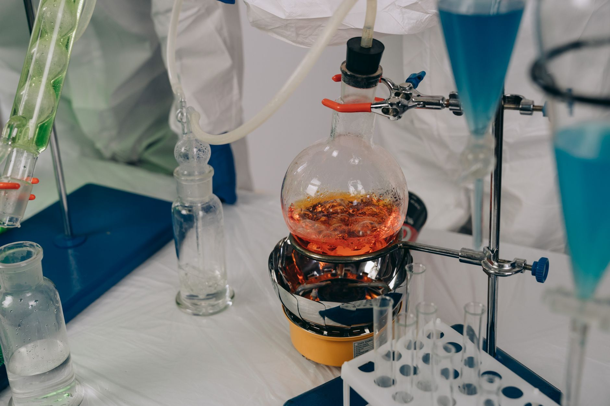

中 헬륨 차단, 반도체 공정 냉각재 조달 비상

중국은 2023년 갈륨·게르마늄 수출허가제를 시작으로 2024년 흑연·희토류, 2025년 안티몬까지 전략광물 통제를 단계적으로 확대해왔다. 이번 헬륨 통제 시사는 통제 대상이 광물에서 산업용 가스로 이동했음을 의미한다. 중국은 전 세계 헬륨 생산 3위권으로 연간 약 3,000만㎥를 공급한다.
한국 반도체 제조사들은 300mm 웨이퍼 식각 공정과 초전도 MRI 냉각, 극저온 장비 테스트에 액체헬륨을 연간 수백만 리터 단위로 소비한다. 삼성전자·SK하이닉스 모두 카타르·알제리·미국 텍사스산 헬륨을 주요 공급원으로 쓰지만, 중국 경유 정제·재포장 물량이 국내 유입량의 약 30%를 차지한다.
헬륨은 대기 중 농도가 5ppm에 불과해 공기에서 직접 추출하는 것이 경제성이 없다. 천연가스 정제 과정에서만 회수 가능하기 때문에 생산지가 카타르·러시아·미국·알제리·중국 5개국으로 극도로 집중돼 있다. 카타르산은 LNG 계약과 연동돼 있어 단기 물량 확대가 어렵고, 러시아산은 우크라이나 전쟁 이후 이미 서방 공급망에서 이탈했다.
수출통제가 현실화할 경우 한국 반도체 업계의 헬륨 조달 단가는 즉시 20~40% 상승할 것으로 업계는 추정한다. 헬륨 재활용 시스템(Recovery & Reliquefaction Unit) 설치에 수십억 원의 초기 비용이 들고, 설계·설치 기간만 최소 12개월이 걸린다.
중국의 수출통제 전략은 이제 '광물'에서 '가스'로 영역을 넓혔다. 광물은 채굴·정련 국산화가 가능하지만, 헬륨은 지질 분포 자체가 대체를 막는다. 이는 수출통제 무기의 성격이 '가격 교란'에서 '물리적 공급 불가'로 격상됐음을 뜻한다.
반도체 식각 장비의 가동 중단 임계점은 헬륨 재고 소진 후 48~72시간이다. 전략 비축 없이는 생산 라인 자체가 멈춘다. 소재 차원의 위기가 공장 가동률 차원의 위기로 직결되는 구조다.
카타르 QatarEnergy와 에어프로덕츠(Air Products)는 헬륨 공급 재계약 협상에서 가격 결정권을 쥐게 된다. 2024년 기준 카타르는 전 세계 헬륨 공급의 약 32%를 담당하며, 중국 물량 대체 수요가 몰리면 장기계약 프리미엄이 15~25% 추가될 전망이다.
국내 헬륨 재활용 장비 제조사와 가스 전문 유통사(SK머티리얼즈, 에어리퀴드코리아)는 회수·재액화 설비 수주 급증의 직접 수혜 구간에 들어선다. 삼성·SK 협력사 중 헬륨 재활용 설비를 이미 보유한 업체는 단가 협상력이 즉시 상승한다.
삼성전자와 SK하이닉스는 중국 경유 헬륨 물량(전체의 약 30%)을 단기 대체하지 못할 경우 EUV 공정 및 식각 라인 가동률을 조정해야 한다. 가동률 1%포인트 감소는 분기 매출 기준 수백억 원의 손실로 환산된다.
헬륨 의존도가 높은 MRI 제조사(지멘스 헬시니어스, GE헬스케어)와 양자컴퓨팅 연구기관들도 즉각적 피해권에 든다. 국내 대학·연구소의 초전도 실험 장비 약 120대 이상이 액체헬륨으로 냉각 운영 중이다.
삼성전자·SK하이닉스 구매팀은 즉시 헬륨 재고 비축 수준을 현행 4~6주분에서 12주분으로 확대하는 긴급 계약 갱신을 추진해야 한다. 카타르·알제리 공급사와의 직계약 비중을 현재 70%에서 90% 이상으로 높이는 것이 최우선이다.
헬륨 재활용 시스템 도입은 초기 투자비(fab당 30억~80억 원)가 크지만, 수출통제 현실화 시 2년 내 ROI가 확보된다. 설비 발주는 지금 시작해야 12개월 내 가동이 가능하다. 이미 수소 재활용 인프라를 갖춘 소재 기업은 전환 비용이 절반 이하로 줄어든다.
실제 조달 현장에서는 — 헬륨 공급 위기 신호는 항상 '가격 급등'보다 '납기 연장'으로 먼저 나타난다. 현재 일부 공급사들이 신규 계약 물량에 대해 '가격 확정 불가' 조건을 요구하기 시작했다면, 이미 공급 긴축이 시작된 것이다. 지금 당장 헬륨 공급사의 계약 조건 변화를 모니터링하고, 조건 변경이 감지되는 즉시 대체 루트 계약을 병행 가동해야 한다.
이 포스팅은 쿠팡 파트너스 활동의 일환으로 수수료를 제공받습니다.